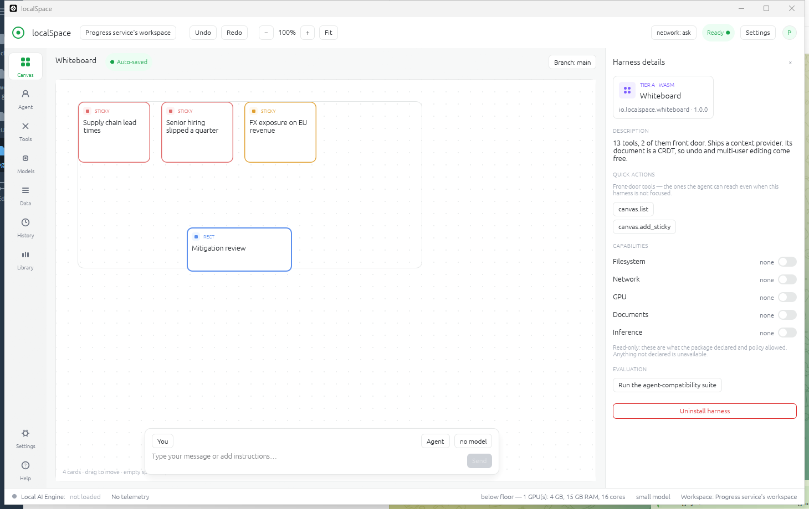
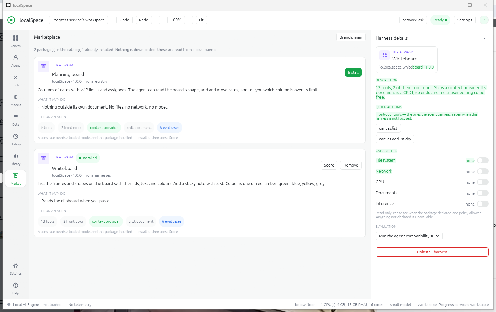
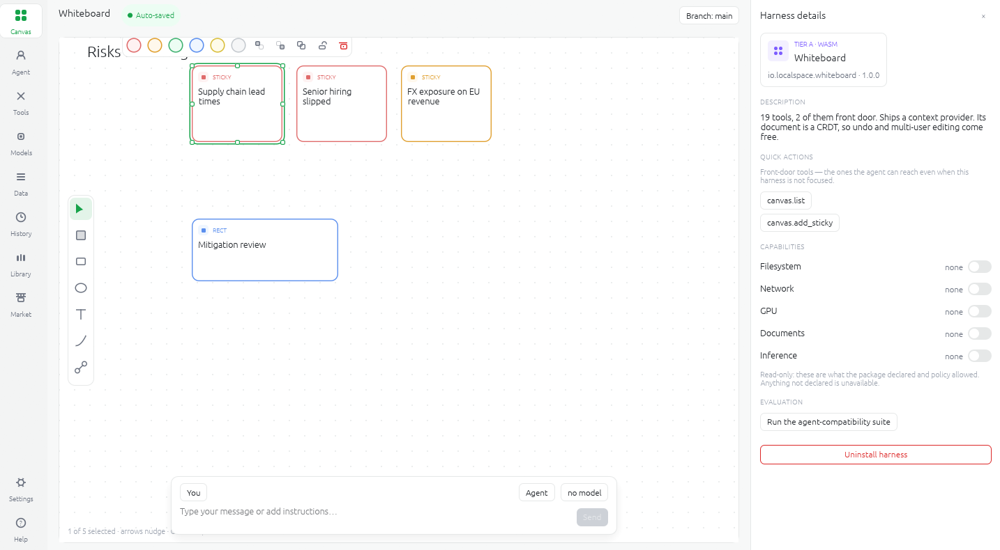

v0.1 developer preview MIT or Apache-2.0
A chat-only assistant can describe your whiteboard. localSpace lets one edit it — through typed tools, behind a permission check, with every change recorded as a commit you can undo.
A self-hosted AI workstation built end to end in Rust. Everything you see is a harness: a sandboxed UI, tools the agent can call, and a context provider that tells the model what is actually on screen. Your hardware, your weights, no telemetry.

01 · THE PRIMITIVE
A whiteboard, a planning board, a physics sim, the settings screen, the marketplace itself — each is an installed package, and each brings the same three things. A package missing any of them is not agent-usable, and localSpace says so at install rather than at the moment it fails.
Capabilities are default deny. A package that later wants the network re-prompts with a diff of exactly what changed.
The marketplace reads from a local bundle — nothing is downloaded to browse it. Organisations curate their own catalog and publish internal tools under their own key.

02 · THE GATE
Every call goes through Core. That is the entire safety story, and it is one code
path — the same one localspace call takes from a shell script, so an
automation and an agent cannot diverge.

Undo, redo, and reject an entire agent run as a single action — every write it made, gone together.
The log is append-only and hash-chained, verifiable, and reopened across restarts.
Fetched and retrieved content is wrapped as untrusted, and the loop does not follow instructions inside it. A tool the model was never shown cannot be called.
03 · TOPOLOGY
localspace runs Core and the client in a single process on your desk.
localspace-serve runs the same Core behind an HTTP and WebSocket API for
a team. They share the entire protocol, so the personal app and the company server
cannot drift apart.
// PERSONAL
Core and the client each hold to a 50 MB idle budget — the shell, not the workload. It is measured at runtime and printed against the budget, so the number is never aspirational. The client repaints on input, never on a timer.
// TEAM
Per-document ACLs are enforced on every read, every tool call and every sync message. Concurrent edits converge through Automerge. A view-only member's writes are rejected server-side, not merely hidden in the UI.
// AIR-GAPPED
Under air-gapped mode the web tools are not blocked at call time — they are absent from the model's tool set entirely. It cannot ask for what it was never shown.
04 · PLACEMENT
doctor profiles the machine in front of it, then does real arithmetic
over a model's tensor map: what stays GPU-resident, which experts get a hot cache,
what falls back to RAM, what streams from NVMe, and what that costs per token. The
target is a 100B-class MoE running usefully on a single 32 GB card.
The throughput figure is a roofline estimate, not a measurement — bytes that must move per token, over the bandwidth of the path they move over. It is deliberately conservative, and meant to be replaced by a real measurement at install.
No weights are bundled. Point localSpace at any OpenAI-compatible endpoint — llama.cpp, LM Studio, mistral.rs, vLLM, SGLang — and it speaks to all of them.
05 · HONESTLY
This is a developer preview, and you are the sort of person who checks. So here is the real state of it — the same table that ships in the repository, where it is written to be checkable rather than flattering.
docs.search returns "not available in this build" rather than an empty result that would read as "nothing matched". Core routes to one external endpoint; there are no supervised inference workers.
cargo test --workspace is the short version; the whiteboard
suite installs the real package — logic running as a wasm component under wasmtime —
and drives it through Core exactly as the agent does.
We did not build a server we cannot see into.
We built one binary that never needed one.
There is no telemetry to disable, because none was written. The status bar reads No telemetry as a fact about the binary, not as a setting you have to find. The only network call localSpace makes is the one you point it at.
06 · DEVELOPER PREVIEW
We are opening the preview to a small group who will actually push on it — people running their own weights, writing their own harnesses, or trying to get an agent past a compliance review. Tell us which, and we will get to you in that order.